Note: I"m always interested in making things clearer, so if you have any trouble understanding any part of this, please let me know!
We’re going to discuss data distributions and probability!
In this lesson, I will introduce the following statistical terms and concepts:
the uniform distribution
The normal distribution (aka the Gaussian distribution)
probability theory
The law of large numbers
Central Limit Theorem
We will also cover the following skills and functions in R (though many of these we will explore in greater detail in our R lessons)
loading packages
plotting histograms
the package ggplot2
functions:
sample()
rep()
To use the functions in a package, you must first load the package into R. You can do this by using library(package = package_name). If you get an error stating “there is no package called ‘…’”, that means R can’t find the package. If you haven’t made a typo, you may not have installed the package. If you know that you have installed the package, it’s possible that the package is stored in a different library. The function .libPaths() will give you the pathway to your library and to any other R package libraries you may have installed on your computer.
When writing a script, you should load all packages at the top of the script. This makes it easier to know which packages are used throughout the script.
library(package = ggplot2)A distribution is data organized from the smallest value to largest. We saw a distribution when we plotted histograms.
set.seed(111)
x <- rnorm(n = 1000)
hist(x)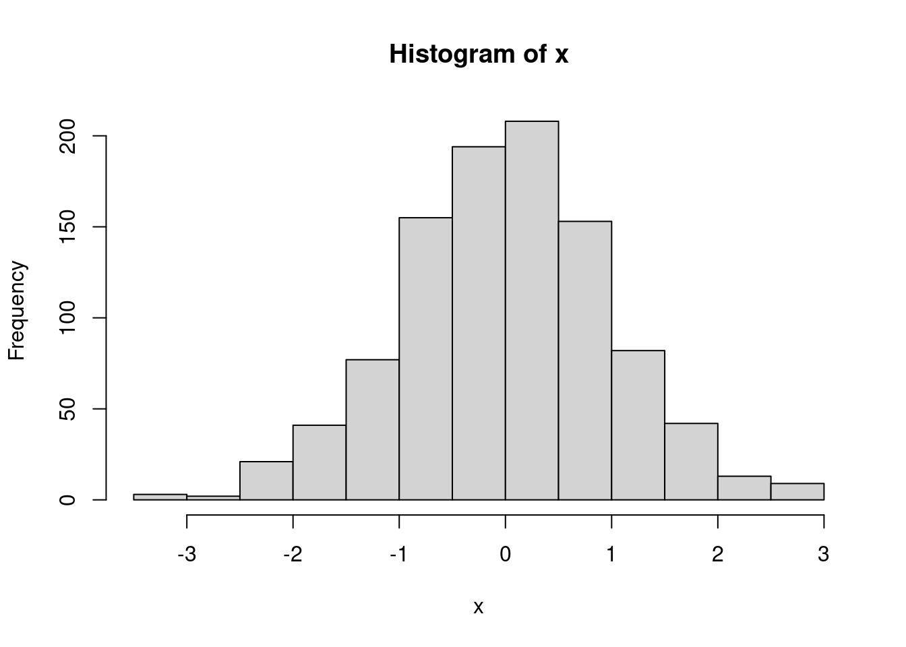
A histogram is a visual representation of data distribution. On the x-axis, you can see the full range of your variable of interest. In this randomly generated data, we can tell the data range from roughly -3.5 to 3. We can check the precise values with the function range() which returns the minimum and maximum values in a vector.
range(x)## [1] -3.323335 2.926025What about the y-axis?
“Frequency” is basically a count of observations. The higher you go, the more observations there are with that value. So, in this case, there are \(y\) observations with the value \(x\). With discrete outcomes this is pretty straight-forward. But the data above is continuous, so what does the histogram show?
For continuous variables, we “bin” the data. In the histogram above the data are divided into 13 bins, each of which represents a range of the data. The first bin (roughly) contains all of the observations that lie within -3.499 to -3, the second those that lie between -2.99 and -2.5, the third -2.499 to - 2, etc. We can force the histogram function to choose a different number of bins by specifying the breaks = argument.
hist(x, breaks = 7)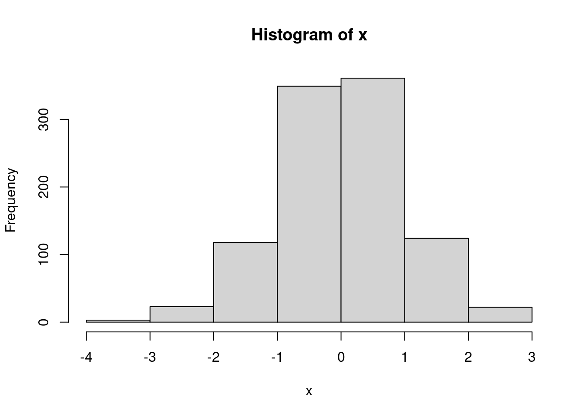
hist(x, breaks = 28)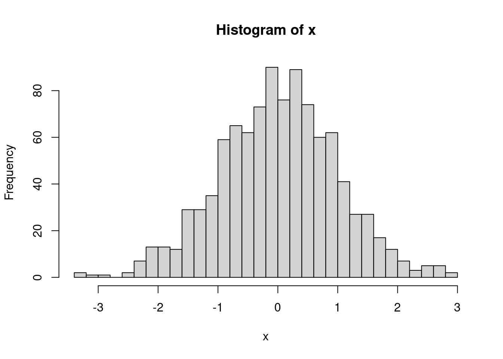
Data generally can be described by well known mathematical distributions. (The distribution above is a normal distribution, which we’ll discuss a bit later.) These distributions are linked to the probability of seeing an observed value. That’s a bit abstract and confusing. Let’s think about a real-world example. When you role a normal dice1 you will land on 1, 2, 3, 4, 5, or 6. Unless there is something wrong with the dice, each of those values is equally as possible. Otherwise, board games and gambling would be a lot easier.
So, how likely is it that we role a three?
When you see a question, take a bit of time and try to get the answer yourself. You might get it wrong, but the processing of thinking about it will help you understand it better.
There are six sides, each side is equally possible, so each value has a one in six chance (\(\frac{1}{6}\)). An individual outcome over the number of possible outcomes.
What are the chances that we role an even number?
\(\frac{1}{3}\)
\(\frac{4}{6}\)
\(\frac{1}{2}\)
\(\frac{1}{6}\)
First, how many even numbers are possible? 2, 4, and 6. If we role one those three numbers we’ll define that as a “success”. 1, 3, and 5 would be a “failure”. Essentially, we have two possible outcomes (odd or even), and both have an equal chance. So, the answer is \(\frac{1}{2}\).
You could also think of it as \(\frac{3}{6}\), which reduces to \(\frac{1}{2}\). There are six possible outcomes, three of which are successes and three of which are failures.
What about the chances that we role anything other than a 3?
\(\frac{1}{6}\)
\(\frac{5}{6}\)
\(\frac{1}{3}\)
\(\frac{1}{2}\)
We can define a role of 1, 2, 4, 5, and 6 as a “success”, and a 3 as a “failure”. This one is a little trickier because if we simplify the outcomes, we no longer have equal chances. That is, if we say there are two possible outcomes, 3 and “not 3”, the chance of 3 is far less likely than “not 3”. But, we still have six possible outcomes, five of which are not a 3 So, we get \(\frac{5}{6}\).
We have another way to arrive at that answer. When you role a dice, you will get an outcome; you will get 1, 2, 3, 4, 5, or 6 (we’re assuming nothing strange like the dice rolling off the table and a dog eating it). If you add up the probability for each number, what do you get?
prob_one <- 1/6
prob_two <- 1/6
prob_three <- 1/6
prob_four <- 1/6
prob_five <- 1/6
prob_six <- 1/6
prob_one + prob_two + prob_three + prob_four + prob_five + prob_six## [1] 1You should get 1!
Note: There is a much more efficient way to write this bit of code: rep() takes the argument x, in this case 1/6, and repeats it \(n\) times, here 6.
prob_vector <- rep(x = 1/6, times = 6)
prob_vector## [1] 0.1666667 0.1666667 0.1666667 0.1666667 0.1666667 0.1666667You can then use the sum() function to add each element of the vector together
sum(prob_vector)## [1] 1The whole thing can even be done in one line:
sum(rep(x = 1/6, times = 6))## [1] 1The sum of each outcome in an event should equal 1. Probability values are always within a range of 0 to 1. A value of 0 means an even never occurs, 1 it always occurs. If you know the probability of an event occurring, you know the probability of that event not occurring (assuming the events are independent, more on that later). Just subtract from 1!
prob_three <- 1/6
1 - prob_three ## [1] 0.8333333The probability of not rolling a 3 is 1 minus 1/6, which is 5/6 or 0.8333
OK, so what does this have to do with distributions? Remember that a distribution is data organized from the smallest values to the largest. Let’s say that you roll the dice 1,000 times and keep track of each role outcome. Each roll is a data point and because one roll has no effect on the following roll, each data point is independent. If we organized the data from smallest to largest what would the distribution look like?
We’ll use the sample() function to randomly select a number from 1 to 6. The function has an argument prob that allows you to specify the chances, or probabilities, of each value. Each side has an equal probability, so we’ll set them all to 1/6. We’ll start slow and simulate 1 roll.
probs <- rep(1/6, times = 6)
rolls <- sample(c(1:6), size = 1, replace = T, prob = probs)
rolls## [1] 3Our first roll was a rolls. Let’s visualize the distribution of the data we have. We’ll use the package ggplot2 for visualizing.
# all of the ggplot plots will be a bit too advanced at this point. Don't worry too much about how it's done, and just worry about the outcome. I've left the code here so you can go back and play around with it.
ggplot(as.data.frame(rolls),aes(rolls)) +
geom_dotplot() +
scale_y_continuous(NULL, breaks = NULL) +
scale_x_continuous(
limits = c(1, 6),
breaks = c(1, 2, 3, 4, 5, 6),
labels = c(1, 2, 3, 4, 5, 6))+
ggtitle('Rolls of the dice')## Bin width defaults to 1/30 of the range of the data. Pick better value with `binwidth`.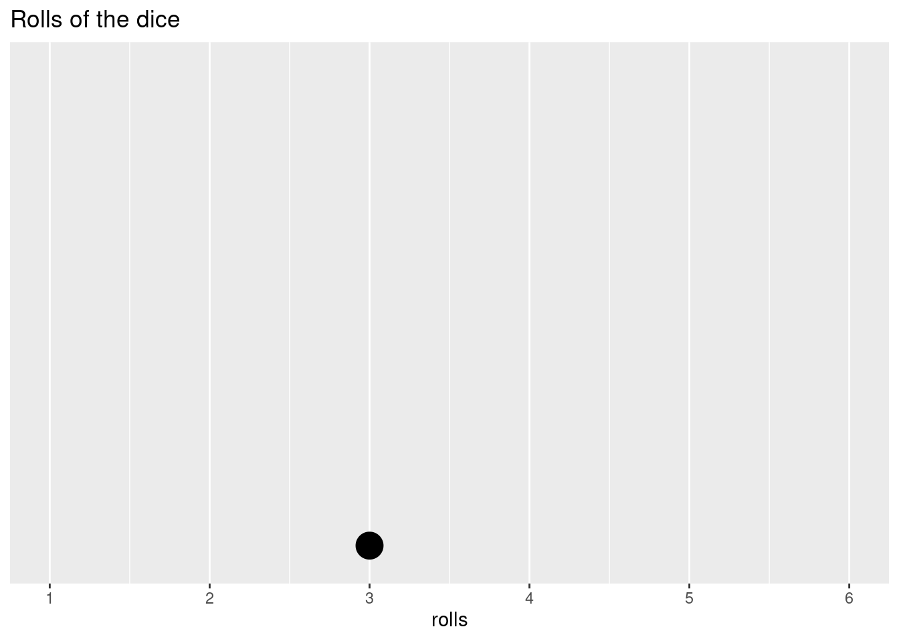
Since it’s only one data point, that’s not all that exciting. But, we have to start somewhere. Our possible outcomes are distributed along the x-axis and our data point is then placed at the appropriate value. Let’s do five more rolls.
rolls <- append(rolls,
sample(c(1:6), size = 5, replace = T, prob = probs)
)
ggplot(as.data.frame(rolls),aes(rolls)) +
geom_dotplot() +
scale_y_continuous(NULL, breaks = NULL) +
scale_x_continuous(
limits = c(1, 6),
breaks = c(1, 2, 3, 4, 5, 6),
labels = c(1, 2, 3, 4, 5, 6))+
ggtitle('Rolls of the dice')## Bin width defaults to 1/30 of the range of the data. Pick better value with `binwidth`.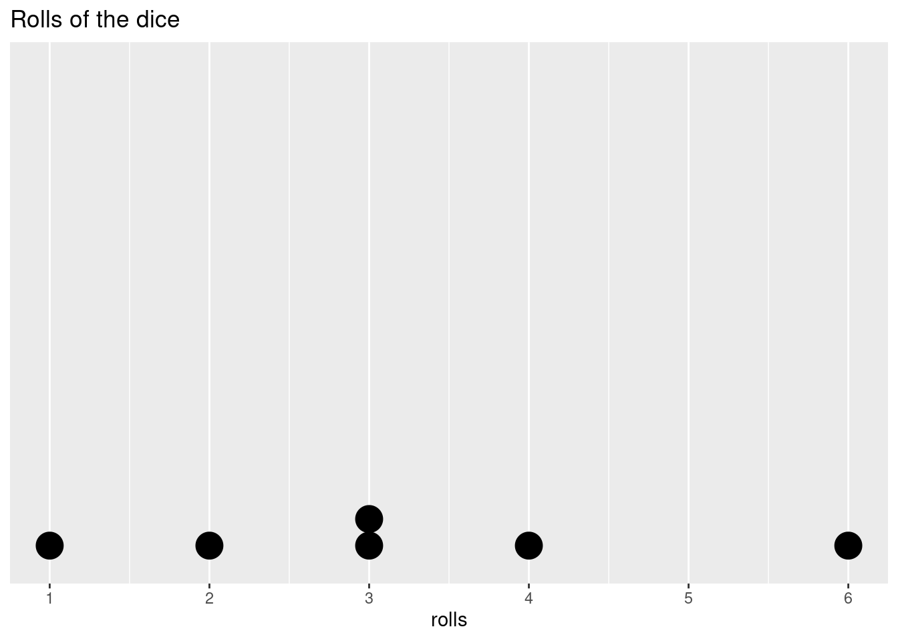
Is it weird that in 6 rolls we didn’t get every possible outcome? Not really, the outcome of a roll is not affected by the roll before or after it, that is, it is independent. If we roll a 2, a 2 is equally as likely as any other value on the next roll. If we roll ten times and we still don’t have a 2, the chances of getting a 2 don’t increase on the next roll. The dice doesn’t have any way to track the previous or upcoming roll, so the past rolls give us no information about any individual future roll.
Let’s start to fill out the distribution a bit more.
rolls <- append(rolls,
sample(c(1:6), size = 14, replace = T, prob = probs)
)
ggplot(as.data.frame(rolls),aes(rolls)) +
geom_dotplot() +
scale_y_continuous(NULL, breaks = NULL) +
scale_x_continuous(
limits = c(1, 6),
breaks = c(1, 2, 3, 4, 5, 6),
labels = c(1, 2, 3, 4, 5, 6))+
ggtitle('Rolls of the dice')## Bin width defaults to 1/30 of the range of the data. Pick better value with `binwidth`.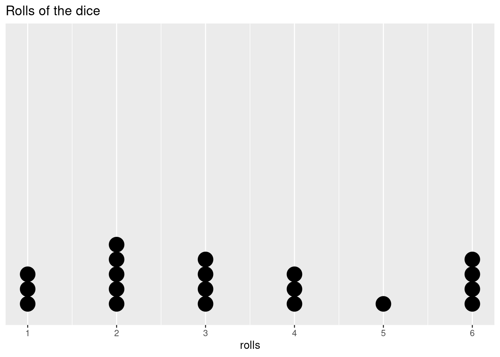
Even if we can’t predict the outcome on any individual roll, as we add more data points and we start to fill out our distribution, we may start to see a shape in how the data are distributed. Let’s add a lot more points to get an even better idea.
rolls <- append(rolls,
sample(c(1:6), size = 60, replace = T, prob = probs)
)
ggplot(as.data.frame(rolls),aes(rolls)) +
geom_dotplot() +
scale_y_continuous(NULL, breaks = NULL) +
scale_x_continuous(
limits = c(1, 6),
breaks = c(1, 2, 3, 4, 5, 6),
labels = c(1, 2, 3, 4, 5, 6))+
ggtitle('Rolls of the dice')## Bin width defaults to 1/30 of the range of the data. Pick better value with `binwidth`.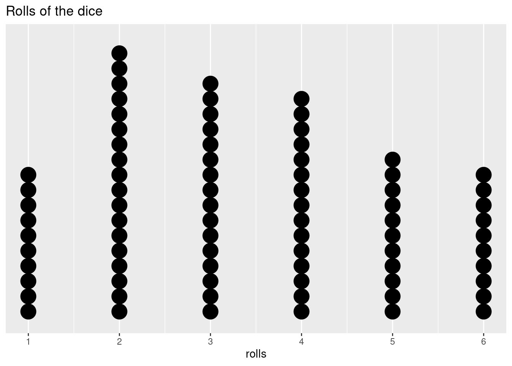
The number of rolls for each side is not completely equal, but it’s starting to even out. What if we do 100,000 rolls?
rolls <- append(rolls,
sample(c(1:6), size = 99920, replace = T, prob = probs)
)
ggplot(as.data.frame(rolls),aes(rolls)) +
geom_histogram() +
scale_y_continuous(NULL, breaks = NULL) +
scale_x_continuous(
breaks = c(1, 2, 3, 4, 5, 6),
labels = c(1, 2, 3, 4, 5, 6))+
ggtitle('Rolls of the dice')## `stat_bin()` using `bins = 30`. Pick better value with `binwidth`.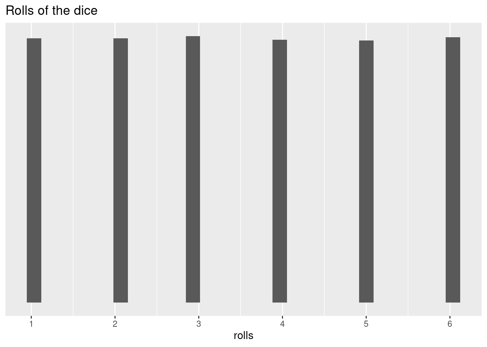
At this point, our data are pretty much completely equally distributed across the six possible outcomes. Since our probabilities for each roll were equal, this is what we expected to happen. This is called a uniform distribution. The probabilities are constant across all values.
How can you tell if you have a loaded dice (a dice that has been manipulated to increase the chances of landing on a particular side)?
So, what does this really tell us? We’ve confirmed that our dice is fair, but it took quite a few throws to see a roughly equal distribution. And we now know how to calculate a probability for a single throw, but what about multiple throws (e.g., what are the chances of rolling two 6s in three tries?, ten tries?)
Let’s try another dice example. Let’s say you have a friend who always beats you in board games that use dice. He always brings his “lucky” dice but you’re starting to suspect that his luck might be cheating. He seems to roll higher numbers a lot more than you would expect. How can you figure out if he’s cheating or not?
First, let’s create his “lucky” dice by changing the probabilities:
lucky_dice <- function(n_rolls, lucky_side_probs = 1/5){
other_probs <- (1 - (lucky_side_probs *3))/3
probs <- c(rep(other_probs, times = 3), rep(lucky_side_probs, times = 3))
roll = sample(c(1:6), size = n_rolls, replace = T, prob = probs)
return(roll)
}
# we'll create a similar function for a fair dice
normal_dice <- function(n_rolls){
probs <- c(rep(1/6, times = 6))
roll = sample(c(1:6), size = n_rolls, replace = T, prob = probs)
return(roll)
}You know that there should be a one in two chance of rolling a 4, 5, or 6, so any individual roll doesn’t tell you anything. But, you decide to keep track of his rolls. You make sure to write down the outcome of 36 successive rolls during game night.
set.seed(111)
friend_rolls <- lucky_dice(n_rolls = 36)
friend_rolls## [1] 4 3 5 4 5 4 6 4 4 6 4 4 6 6 6 4 6 1 5 3 4 5 5 5 1 5 3 5 2 4 6 4 4 4 5 3You then remember in your stats class that a roll of a dice is independent from other rolls and you remember some weird distributions with some of the smaller sample sizes. You feel like you took quite a few observations, but you can’t remember what amount of variation was in the samples. His rolls have a lot of 4s, 5s, and 6s, but now you’re not sure how randomness might affect the rolls. You decide to look at the scores in more detail before accusing him of cheating.
So, how can you determine what is normal and what is suspicious? In a fair dice, each value is equally likely, so you can actually use the average of dice rolls. The mean of 1, 2, 3, 4, 5, 6 is 3.5. You can think of all of the rolls of fair dice throughout history (and into the future) as the population, this the “true mean” of this population is 3.5. While we can’t evaluate every single roll, a large enough sample size should confirm this:
mean(sample(c(1:6), 1000000, replace = T))## [1] 3.496513How does this help you determine if your friend is using an unfair dice? Now we can easily compare the “sample” data - the dice rolls we observed during game night - to a fair dice. According to the law of larger numbers, if we repeat the same conditions, 36 rolls of a dice, we can assess how common a series of outcomes like that of our friends with a normal dice without worrying about the exact values or sequence of values.
The law of large numbers - The mean of the sample means is close to the mean of the underlying population, provided that the samples are independent and the sampling methods are identical. The larger the sample size, the closer the mean of sample means is to the population mean.
So, you roll a dice 36 times and take the average of those outcomes. You then repeat this 1000 times (you are very competitive and really want to know if your friend is really this good at monopoly).
set.seed(123)
probs <- c(rep(1/6, times = 6))
rep_roll_test <- replicate(1000,
mean(
sample(c(1:6),
size = 36,
replace = T,
prob = probs)
)
)
normal_rolls_36 <- data.frame(roll_means = rep_roll_test)
ggplot(data = normal_rolls_36, aes(roll_means))+
geom_histogram(color = 'black', bins = 15)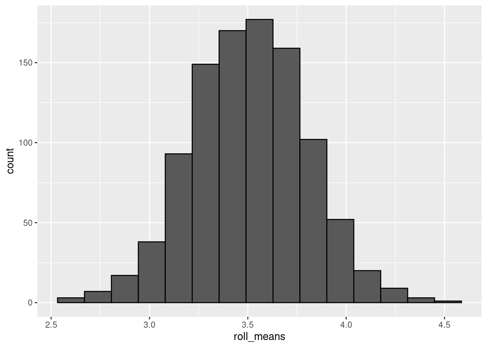
Now we have a distribution of sample means (similar to how we did with the confidence intervals). Even though the probability of any single roll of the dice is uniform, the outcome of multiple rolls ends up being normally distributed. That’s strange, no?
Not really. It turns out that sampling distributions (that is, the distributions of independent sample statistics, like the sample mean) adhere to the central limit theorem. The central limit theorem states that you perform identical but independent sampling and your sample size is large enough (~ 30) the distribution of the sample statistics (like the sample means) will be normally distributed. This is true even if the underlying probabilities do not follow a normal distribution.
The normal distribution has properties that make calculating probabilities quite a bit easier. Because values in a normal distribution are symmetrically centered around the mean, calculating probability from the normal distribution is relatively straight-forward (“relatively” is probably doing a lot of work in that sentence). For instance, what is the probability of rolling a value higher than the mean? The mean is 3.5, 4, 5, 6, are above it; 1, 2, 3, below. So the probability of rolling a value higher than the mean is 0.5 or 50%.
Even more useful, normal distributions follow a 68-95-99.7 rule (technically it’s 68.27, 95.45, and 99.73% but that’s not as catchy). 68% of the observations in a normal distribution lie one standard deviation above and below the mean.
# create a data frame to make it easier to use in ggplot
normal_rolls_36 <- data.frame(roll_means = rep_roll_test)
mean <- mean(normal_rolls_36$roll_means)
stand_dev <- sd(normal_rolls_36$roll_means)
one_sd <- c(mean - stand_dev, mean + stand_dev)
two_sd <- c(mean - 2 * stand_dev, mean + 2 * stand_dev)
three_sd <- c(mean - 3 * stand_dev, mean + 3 * stand_dev)
colors <- topo.colors(10)
ggplot(data = normal_rolls_36, aes(roll_means)) +
geom_vline(xintercept = mean, color = colors[1], linetype = 'solid', size = 2)+
geom_vline(xintercept = one_sd, color = colors[2], linetype = 'twodash', size = 2) +
geom_vline(xintercept = two_sd, color = colors[3],linetype = 'dashed', size = 2) +
geom_vline(xintercept = three_sd, color = colors[4],linetype = 'dotted', size = 2) +
stat_function(fun = dnorm,
args = c(mean = mean(normal_rolls_36$roll_means),
sd = sd(normal_rolls_36$roll_means)),
col = colors[5], size = 2) +
geom_segment(aes(x = one_sd[1], xend = one_sd[2], y = 0.8, yend = 0.8),
size = 2, color = colors[2]) +
geom_segment(aes(x = two_sd[1], xend = two_sd[2], y = 0.2, yend = 0.2),
size = 2, color = colors[3]) +
geom_segment(aes(x = three_sd[1], xend = three_sd[2], y = 0, yend = 0.),
size = 2, color = colors[4])+
geom_histogram(aes(y = ..density..), color = 'black', bins = 15, alpha = 0.3) +
annotate(geom = 'text', x = 3.5, y = 0.85, label = '68.27%', size = 5) +
annotate(geom = 'text', x = 3.5, y = 0.25, label = '95.45%', size = 5)+
annotate(geom = 'text', x = 3.5, y = 0.05, label = '99.73%', size = 5) 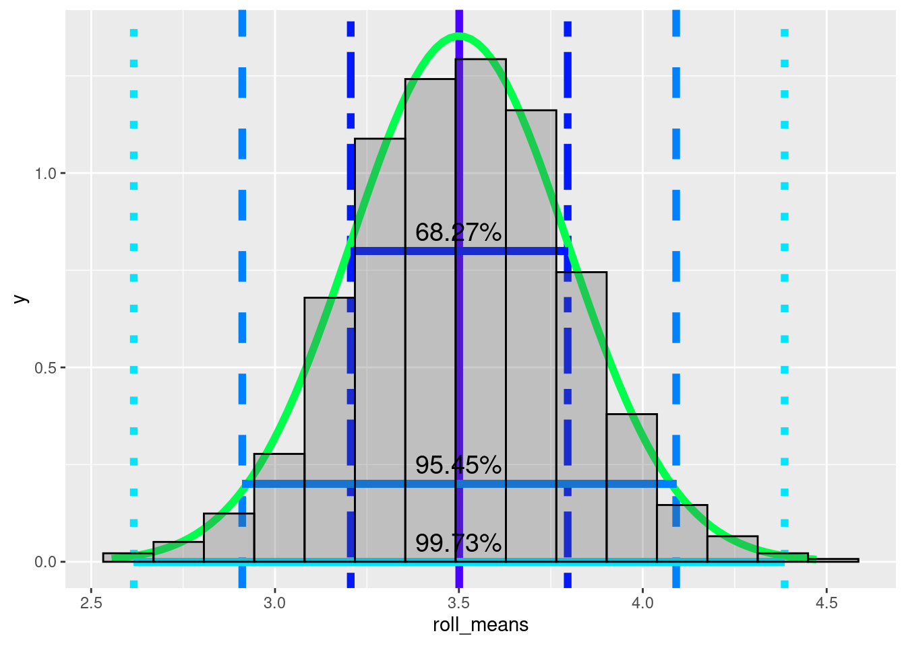
95% of observations lie within two standard deviations above and below the mean, and 99.7% lie within three standard deviations. This is useful because we can use the distribution to estimate the probability of a value coming from the distribution. Just like how we can look at a histogram of dice roll probabilities and estimate the probability of a single roll, we can now estimate the probability that the mean of your friend’s rolls assuming the dice is a fair dice. If the mean of his rolls is 3.75 should we assume that he manipulated the dice? Probably not. Even though it is higher than average, the mean of 36 dice rolls will fall between the true mean and one standard deviation above the true mean roughly 34% of the time (68/2). The mean of 36 dice rolls will be less than or equal to 3.75 a bit more than 80% of the time
How did I estimate that? The probabilities have to equal 1 (or 100%). 3.75 is within a standard deviation of the mean, which is 0.68. Because I said “less than or equal to”, I have to include everything below 3.75 even if it is more than 1 standard deviation away from the mean. 1 - 0.68 gives you everything that is more than a standard deviation from the mean.
1 - 0.6827## [1] 0.3173To get the lower half, you divide by 2.
(1 - 0.6827)/2## [1] 0.15865Now add the lower half to the 0.68
0.6827 + (1 - 0.6827)/2## [1] 0.84135You get a little less than 85%. Because 3.75 is slightly under 1 standard deviation above the mean, I rounded down to 80%.
Now, let’s look at your friend’s sample statistic, the sample mean.
mean(friend_rolls)## [1] 4.305556The sample mean is 4.3055556. Let’s assume your friend isn’t cheating. Is it possible for the outcome of 36 rolls to have a mean of 4.3055556 if you use a fair dice?
We can check this visually. The yellow(ish) line is the mean of your friend’s rolls.
colors <- topo.colors(10)
ggplot(data = normal_rolls_36, aes(roll_means)) +
geom_vline(xintercept = mean, color = colors[1], linetype = 'solid', size = 2)+
geom_vline(xintercept = one_sd, color = colors[2], linetype = 'twodash', size = 2) +
geom_vline(xintercept = two_sd, color = colors[3],linetype = 'dashed', size = 2) +
geom_vline(xintercept = three_sd, color = colors[4],linetype = 'dotted', size = 2) +
stat_function(fun = dnorm,
args = c(mean = mean(normal_rolls_36$roll_means),
sd = sd(normal_rolls_36$roll_means)),
col = colors[5], size = 2) +
geom_segment(aes(x = one_sd[1], xend = one_sd[2], y = 0.8, yend = 0.8),
size = 2, color = colors[2]) +
geom_segment(aes(x = two_sd[1], xend = two_sd[2], y = 0.2, yend = 0.2),
size = 2, color = colors[3]) +
geom_segment(aes(x = three_sd[1], xend = three_sd[2], y = 0, yend = 0.),
size = 2, color = colors[4])+
geom_histogram(aes(y = ..density..), color = 'black', bins = 15, alpha = 0.3) +
annotate(geom = 'text', x = 3.5, y = 0.85, label = '68.27%', size = 5) +
annotate(geom = 'text', x = 3.5, y = 0.25, label = '95.45%', size = 5)+
annotate(geom = 'text', x = 3.5, y = 0.05, label = '99.73%', size = 5) +
geom_vline(xintercept = mean(friend_rolls), color = colors[10], size = 2)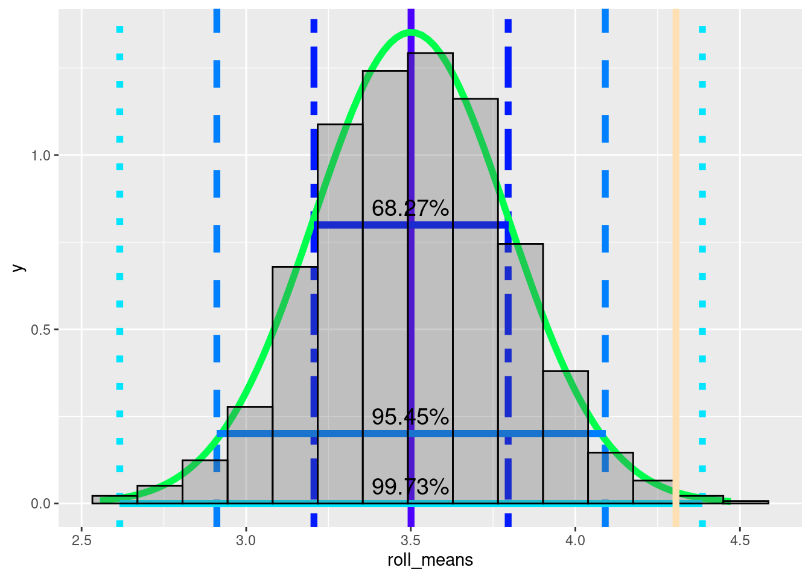
Just from a visual inspection, what would you estimate the probability of the average of 36 rolls being 4.3055556, assuming the dice is fair?
~99%
~4.3%
~0.5%
~16.67%
The visualization above suggests that 4.3055556 is almost three standard deviations above the mean. Because it is more than 2 standard deviations from the mean, it is more extreme than 95% of sample mean(means of 36 dice rolls). It is higher than roughly 97.5% (95 + the bottom 2.5%). It’s within three standard deviations and we do see more extreme values, so it is technically possible. Still there is somewhere between a 0.15 and 2.5 % chance that the average of 36 rolls would be this extreme, if the dice is fair.
We can get more precise numbers using some r functions. The function pnorm(). pnorm() calculates a cumulative distribution function for a normal distribution. A cumulative density function is the probability that that a variable is a value that is less than or equal to \(x\). In our case, the probability that a mean of 36 rolls of a dice is less than or equal to 4.3055556.
cdf <- pnorm(mean(friend_rolls), mean = mean, sd = stand_dev)
cdf## [1] 0.9968139So, 0.9968139 of sample means are below our friend’s roll average.
So, are you convinced that your friend has cheated?
This information might seem pretty abstract right now, but it forms the basis of much of statistics. Soon we’ll get into hypothesis testing, but with this information you will already understand most of the core concepts.
For any task you need to perform in R, there are almost always several options.
To plot a histogram You can use the base R function hist() or ggplot2’s function geom_histogram(). For quick checks, I usually just use the base R function.
To use hist(), you have to specify the x = argument. This needs to be a vector of values. This can be an atomic vector or a column of a data frame, specified by using the data frame variable name (iris in this case), the $ sign, and the variable/column name.
The geom_histogram() method is a bit more complicated at first. We’ll cover it in more detail in a later lesson.
To access a column in a data frame, the most common was are:
use $ with the column name: iris$Sepal.Width.
use [] with the column number iris[, 2].
The square brackets let you subset a data frame by selecting rows and columns by a numerical index.
In the iris data frame, Sepal.Width is the 2nd column.
rows come before columns dataframe[row_number, column_number]
iris[1, 1]is the first row of the first column;
iris[1:10, 2]would be the first ten rows of the second column.
To select a full row or full column, leave the space empty.
iris[, 2]selects all of the rows of the 2nd column.
iris[3, ] selects the 3rd row from all columns.
Use a package like dplyr
There are pros and cons to each of these methods. Using dplyr has a bit of a learning curve as it uses a bit of specialized syntax. $ can be a bit trickier if you want to apply a function to multiple columns. [] is less readable for humans and errors can creep in, for instance if a column is inserted, the column indexes might be off causing trouble if you have to run the code again.
================================================================================
Last update on 2020-11-03
sessionInfo()## R version 4.1.1 (2021-08-10)
## Platform: x86_64-pc-linux-gnu (64-bit)
## Running under: Ubuntu 20.04.3 LTS
##
## Matrix products: default
## BLAS: /usr/lib/x86_64-linux-gnu/blas/libblas.so.3.9.0
## LAPACK: /usr/lib/x86_64-linux-gnu/lapack/liblapack.so.3.9.0
##
## locale:
## [1] LC_CTYPE=en_US.UTF-8 LC_NUMERIC=C
## [3] LC_TIME=de_AT.UTF-8 LC_COLLATE=en_US.UTF-8
## [5] LC_MONETARY=de_AT.UTF-8 LC_MESSAGES=en_US.UTF-8
## [7] LC_PAPER=de_AT.UTF-8 LC_NAME=C
## [9] LC_ADDRESS=C LC_TELEPHONE=C
## [11] LC_MEASUREMENT=de_AT.UTF-8 LC_IDENTIFICATION=C
##
## attached base packages:
## [1] stats graphics grDevices utils datasets methods base
##
## other attached packages:
## [1] ggplot2_3.3.5
##
## loaded via a namespace (and not attached):
## [1] highr_0.9 bslib_0.2.5.1 compiler_4.1.1 pillar_1.6.2
## [5] jquerylib_0.1.4 tools_4.1.1 digest_0.6.27 jsonlite_1.7.2
## [9] evaluate_0.14 lifecycle_1.0.0 tibble_3.1.3 gtable_0.3.0
## [13] pkgconfig_2.0.3 rlang_0.4.11 DBI_1.1.1 yaml_2.2.1
## [17] xfun_0.25 withr_2.4.2 stringr_1.4.0 dplyr_1.0.7
## [21] knitr_1.33 generics_0.1.0 sass_0.4.0 vctrs_0.3.8
## [25] grid_4.1.1 tidyselect_1.1.1 glue_1.4.2 R6_2.5.1
## [29] fansi_0.5.0 rmarkdown_2.9 farver_2.1.0 purrr_0.3.4
## [33] magrittr_2.0.1 scales_1.1.1 ellipsis_0.3.2 htmltools_0.5.1.1
## [37] assertthat_0.2.1 colorspace_2.0-2 labeling_0.4.2 utf8_1.2.2
## [41] stringi_1.7.3 munsell_0.5.0 crayon_1.4.1================================================================================
Copyright © 2021 Dan C. Mann. All rights reserved.